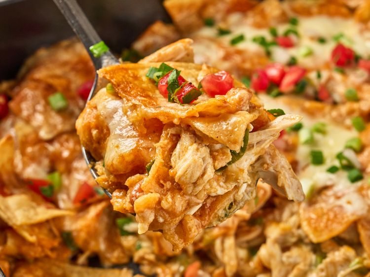

Home
Chicken Chip Bake

Description
This chicken chip bake is a tasty casserole of chicken, pinto beans, and plenty of red and green enchilada sauce, layered with thick-cut tortilla chips. It's on the table in about 45 minutes.
Ingredients
- 3 1/2 cups chopped and cooked rotisserie chicken
- 1 280 gram can of green enchilada sauce
- 450 grams of Monterey Jack cheese grated
- 1 tablespoon olive oil
- 400 grams thick cut homestyle tortilla chips
- 1 430 gram can pinto beans drained and rinsed
- 2 280 gram cans of red enchilada sauce
- Chopped avocado, sour cream, pico de gallo, and cilantro
Steps
- Preheat the oven to 425 degrees F (220 degrees C). Stir chicken, green enchilada sauce, and 1 cup cheese together in a bowl. Reserve 2 tablespoons green onions for topping. Add remaining green onions to chicken mixture, and set aside.
- Drizzle oil in the bottom of a deep 9x13-inch baking dish. Add half the chips to the dish and top evenly with beans and 1 cup cheese. Pour 3/4 cup red enchilada sauce over the top.
- Spread chicken mixture evenly over the sauce and top with remaining chips. Pour remaining red enchilada sauce evenly over the casserole; top with remaining cheese. Cover with foil.
- Bake in the preheated oven for 20 minutes; uncover, and cook until browned and bubbly, about 10 minutes longer.
- Serve topped with desired toppings.